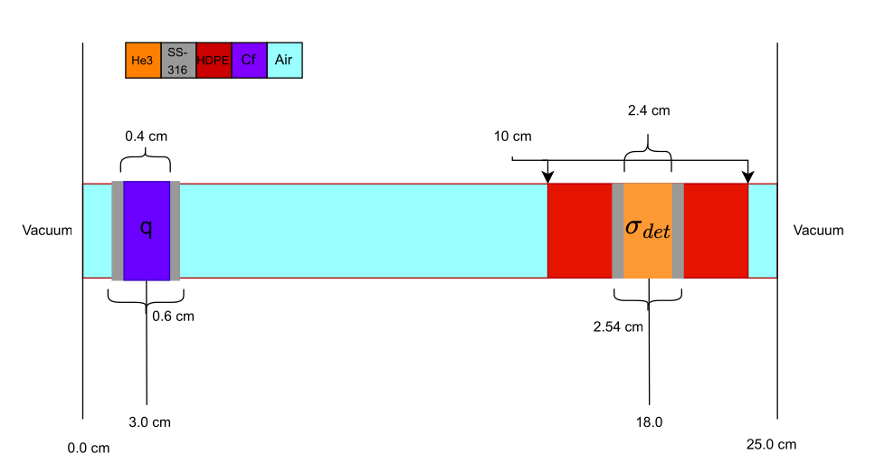

5.3.2. A Multigroup 1D Detector
In this example we will explore using OpenSn’s linear Boltzmann solver for computing detector response functions in a desired region of interest (RoI).
The following is a complete transport simulation example. Each element of the simulation can be described in the sections below:
5.3.2.1. Prerequisites
Before running this example, make sure that the Python module of OpenSn was installed.
5.3.2.1.1. Converting and Running this Notebook from the Terminal
To run this notebook from the terminal, simply type:
jupyter nbconvert --to python --execute detector.ipynb.
To run this notebook in parallel (for example, using 4 processes), simply type:
mpiexec -n 4 jupyter nbconvert --to python --execute detector.ipynb.
[1]:
from mpi4py import MPI
size = MPI.COMM_WORLD.size
rank = MPI.COMM_WORLD.rank
barrier = MPI.COMM_WORLD.barrier
if rank == 0:
print(f"Running the LBS detector example with {size} MPI processors.")
Running the LBS detector example with 1 MPI processors.
5.3.2.1.2. Import Requirements
Import required classes and functions from the Python interface of OpenSn. Make sure that the path to PyOpenSn is appended to Python’s PATH.
[2]:
import os
import sys
import math
import numpy as np
# assuming that the execute dir is the notebook dir
# this line is not necessary when PyOpenSn is installed using pip
sys.path.append("../../..")
from pyopensn.mesh import OrthogonalMeshGenerator
from pyopensn.xs import MultiGroupXS
from pyopensn.source import PointSource, VolumetricSource
from pyopensn.aquad import GLProductQuadrature1DSlab
from pyopensn.solver import DiscreteOrdinatesProblem, SteadyStateSourceSolver
from pyopensn.math import Vector3
from pyopensn.fieldfunc import FieldFunctionInterpolationVolume, \
FieldFunctionInterpolationLine, \
FieldFunctionGridBased
from pyopensn.logvol import RPPLogicalVolume
from pyopensn.context import UseColor, Finalize
OpenSn version 0.0.1
2025-09-20 01:41:44 Running OpenSn with 1 processes.
5.3.2.2. Geometry
In this example, we define a 1D multi-group, source-driven detector response problem using the WIMS69 energy group structure. The neutron source is modeled as a 0.4 cm slab of Cf-252 encased in 0.1 cm slabs of stainless steel (SS-316). The detector is modeled as a 2.4 cm region of He-3 enclosed in a 0.07 cm SS-316 sleeve and surrounded by high-density polyethylene (HDPE). The geometric layout of the problem is shown below:

5.3.2.3. Mesh
5.3.2.3.1. Orthogonal Mesh Generation
To generate the mesh for this problem, we use the in-house orthogonal mesh generator to create a simple Cartesian grid. We begin by creating a list of nodes along the spatial z-direction for each region.
[3]:
# Source Interfaces
src = [2.7, 2.8, 3.2, 3.3]
d_src = [2, 4, 2]
# Detector Interfaces
det = [13.0, 16.73, 16.8, 19.2, 19.27, 23.0]
d_det = [6, 2, 4, 2, 6]
z = [0.0, *src, *det, 25.0]
dz = [4, *d_src, 10, *d_det, 4]
ref = 10
nodesz = np.concatenate([np.linspace(z[i], z[i+1], dz[i]*ref+1)[1:] if i>0 else np.linspace(z[i], z[i+1], dz[i]*ref+1)
for i in range(len(z)-1)]).tolist()
meshgen = OrthogonalMeshGenerator(node_sets=[nodesz])
grid = meshgen.Execute()
[0] Done checking cell-center-to-face orientations
[0] 00:00:00.1 Establishing cell connectivity.
[0] 00:00:00.1 Vertex cell subscriptions complete.
[0] 00:00:00.1 Surpassing cell 46 of 460 (10%)
[0] 00:00:00.1 Surpassing cell 92 of 460 (20%)
[0] 00:00:00.1 Surpassing cell 139 of 460 (30%)
[0] 00:00:00.1 Surpassing cell 184 of 460 (40%)
[0] 00:00:00.1 Surpassing cell 230 of 460 (50%)
[0] 00:00:00.1 Surpassing cell 277 of 460 (60%)
[0] 00:00:00.1 Surpassing cell 323 of 460 (70%)
[0] 00:00:00.1 Surpassing cell 368 of 460 (80%)
[0] 00:00:00.1 Surpassing cell 414 of 460 (90%)
[0] 00:00:00.1 Surpassing cell 460 of 460 (100%)
[0] 00:00:00.1 Establishing cell boundary connectivity.
[0] 00:00:00.1 Done establishing cell connectivity.
[0] Number of cells per partition (max,min,avg) = 460,460,460
[0]
[0] Mesh statistics:
[0] Global cell count : 460
[0] Local cell count (avg,max,min): 460,460,460
[0] Ghost-to-local ratio (avg) : 0
[0]
5.3.2.3.2. Material IDs
When using the in-house OrthogonalMeshGenerator, no material IDs are assigned. The user needs to assign material IDs to all cells. We will begin by assigning the background material ID with a value of 0.
[4]:
grid.SetUniformBlockID(0)
[0] 00:00:00.1 Done setting block id 0 to all cells
Next we will assign material IDs for the detector and source. When assigning material IDs via logical volumes the IDs for each cell is overriden by the most recent assignment. That is to say, assigning a material ID of 1 to any region in our domain will override the previously set ID to those cells.
[5]:
# Detector Volume
det_hdpe = RPPLogicalVolume(
infx=True,
infy=True,
zmin=det[0], zmax=det[-1],
)
grid.SetBlockIDFromLogicalVolume(det_hdpe, 1, True)
det_sleeve = RPPLogicalVolume(
infx=True,
infy=True,
zmin=det[1], zmax=det[-2],
)
grid.SetBlockIDFromLogicalVolume(det_sleeve, 2, True)
det_he3 = RPPLogicalVolume(
infx=True,
infy=True,
zmin=det[2], zmax=det[-3],
)
grid.SetBlockIDFromLogicalVolume(det_he3, 3, True)
[6]:
# Src Volume
src_casing = RPPLogicalVolume(
infx=True,
infy=True,
zmin=src[0], zmax=src[-1],
)
grid.SetBlockIDFromLogicalVolume(src_casing, 2, True)
src_cf = RPPLogicalVolume(
infx=True,
infy=True,
zmin=src[1], zmax=src[-2],
)
grid.SetBlockIDFromLogicalVolume(src_cf, 4, True)
5.3.2.3.3. Cross Sections
In this problem, we compute the multigroup absorption reaction rate in a He-3 detector. We begin by importing the multigroup cross sections, using the WIMS69 energy group structure for five materials:
Air
HDPE
SS-316
He-3
Cf-252
[7]:
xs_dir = "WIMS69"
xs_air = MultiGroupXS()
xs_air.LoadFromOpenSn(xs_dir+"/Air.cxs")
xs_hdpe = MultiGroupXS()
xs_hdpe.LoadFromOpenSn(xs_dir+"/HDPE.cxs")
xs_steel = MultiGroupXS()
xs_steel.LoadFromOpenSn(xs_dir+"/SS_316.cxs")
xs_he3 = MultiGroupXS()
xs_he3.LoadFromOpenSn(xs_dir+"/He3.cxs")
xs_cf = MultiGroupXS()
xs_cf.LoadFromOpenSn(xs_dir+"/Cf252.cxs")
xsecs = [{"block_ids": [0], "xs": xs_air},
{"block_ids": [1], "xs": xs_hdpe},
{"block_ids": [2], "xs": xs_steel},
{"block_ids": [3], "xs": xs_he3},
{"block_ids": [4], "xs": xs_cf}]
[0] Reading OpenSn cross-section file "WIMS69/Air.cxs"
[0] Reading OpenSn cross-section file "WIMS69/HDPE.cxs"
[0] Reading OpenSn cross-section file "WIMS69/SS_316.cxs"
[0] Reading OpenSn cross-section file "WIMS69/He3.cxs"
[0] Reading OpenSn cross-section file "WIMS69/Cf252.cxs"
5.3.2.4. Solver
5.3.2.4.1. Angular Quadrature
Since we are solving a 1D problem we will create Gauss-Legendre Product Quadrature for a 1D slab. In this case we will use 512 polar angles creating a 1D angular quadrature in \(\mu\) with a scattering order of 0.
[8]:
pquad = GLProductQuadrature1DSlab(n_polar=512,
scattering_order=0)
[0] Using 1D Slab Gauss–Legendre product quadrature with 512 angles and weight sum of 1.00
5.3.2.4.2. Group Structure
Since we are using the WIMS69 group structure, we define a groupset block with 69 energy groups.
[9]:
num_groups = 69
grpsets = [
{
"groups_from_to": (0, num_groups-1),
"angular_quadrature": pquad,
"inner_linear_method": "petsc_gmres",
"l_abs_tol": 1.0e-9,
"l_max_its": 500,
"gmres_restart_interval": 100,
},
]
5.3.2.4.3. Source Definition
For the volumetric source, we first specify the source spectrum. In this case, we assign a uniform energy spectrum distributed throughout the source logical volume. Using VolumetricSource, this group-wise source definition is applied per unit length to material ID 4. Once the VolumetricSourceis defined, it is added to the physics options.
[10]:
groups = np.flip([1.00000E-11, 5.00000E-09, 1.00000E-08, 1.50000E-08, 2.00000E-08,
2.50000E-08, 3.00000E-08, 3.50000E-08, 4.20000E-08, 5.00000E-08,
5.80000E-08, 6.70000E-08, 8.00000E-08, 1.00000E-07, 1.40000E-07,
1.80000E-07, 2.20000E-07, 2.50000E-07, 2.80000E-07, 3.00000E-07,
3.20000E-07, 3.50000E-07, 4.00000E-07, 5.00000E-07, 6.25000E-07,
7.80000E-07, 8.50000E-07, 9.10000E-07, 9.50000E-07, 9.72000E-07,
9.96000E-07, 1.02000E-06, 1.04500E-06, 1.07100E-06, 1.09700E-06,
1.12300E-06, 1.15000E-06, 1.30000E-06, 1.50000E-06, 2.10000E-06,
2.60000E-06, 3.30000E-06, 4.00000E-06, 9.87700E-06, 1.59680E-05,
2.77000E-05, 4.80520E-05, 7.55014E-05, 1.48729E-04, 3.67263E-04,
9.06899E-04, 1.42510E-03, 2.23945E-03, 3.51910E-03, 5.53000E-03,
9.11800E-03, 1.50300E-02, 2.47800E-02, 4.08500E-02, 6.73400E-02,
1.11000E-01, 1.83000E-01, 3.02500E-01, 5.00000E-01, 8.21000E-01,
1.35300E+00, 2.23100E+00, 3.67900E+00, 6.06550E+00, 1.00000E+01])
group_width = -np.diff(groups)
dE = groups[0] - groups[-1]
dL = src[-2] - src[1]
Q = (group_width / dE / dL).tolist()
vol_src = VolumetricSource(block_ids=[4], group_strength=Q)
5.3.2.4.4. Discrete Ordinates Problem
For establishing the discrete ordinate problem, we provide;
mesh : The mesh
num_groups : The number of energy groups
groupsets : The groupsets block
xs_map : Cross section map
volumetric_sources : The volumetric source
boundary_conditions : The boundary conditions
options : Physics solver options
[11]:
phys = DiscreteOrdinatesProblem(
mesh=grid,
num_groups=num_groups,
groupsets=grpsets,
xs_map=xsecs,
volumetric_sources = [vol_src],
boundary_conditions = [
{"name": "zmin", "type": "vacuum"},
{"name": "zmax", "type": "vacuum"}
],
options = {"save_angular_flux": True},
)
5.3.2.4.5. Execute
We then create the physics solver, initialize it, and execute it.
[12]:
ss_solver = SteadyStateSourceSolver(problem=phys)
ss_solver.Initialize()
ss_solver.Execute()
[0]
[0] Initializing LBS SteadyStateSourceSolver with name: LBSDiscreteOrdinatesProblem
[0]
[0] Scattering order : 0
[0] Number of Groups : 69
[0] Number of Group sets: 1
[0]
[0] ***** Groupset 0 *****
[0] Groups:
[0] 0 1 2 3 4 5 6 7 8 9 10 11
[0] 12 13 14 15 16 17 18 19 20 21 22 23
[0] 24 25 26 27 28 29 30 31 32 33 34 35
[0] 36 37 38 39 40 41 42 43 44 45 46 47
[0] 48 49 50 51 52 53 54 55 56 57 58 59
[0] 60 61 62 63 64 65 66 67 68
[0]
[0] Initializing spatial discretization.
[0] Computing unit integrals.
[0] Ghost cell unit cell-matrix ratio: 0%
[0] Cell matrices computed.
[0] *** WARNING *** Computing the flux with fewer scattering moments than are present in the cross-section data for block 0
[0] *** WARNING *** Computing the flux with fewer scattering moments than are present in the cross-section data for block 1
[0] *** WARNING *** Computing the flux with fewer scattering moments than are present in the cross-section data for block 2
[0] *** WARNING *** Computing the flux with fewer scattering moments than are present in the cross-section data for block 3
[0] *** WARNING *** Computing the flux with fewer scattering moments than are present in the cross-section data for block 4
[0] Initializing parallel arrays. G=69 M=1
[0] Done with parallel arrays.
[0] Volumetric source #0 has 40 total subscribing cells.
[0] 00:00:01.4 Initializing sweep datastructures.
[0] 00:00:01.4 Done initializing sweep datastructures.
[0] 00:00:01.4 Initialized angle aggregation.
[0] Initializing WGS and AGS solvers
[0] Total number of angular unknowns: 32501760
[0] Number of lagged angular unknowns: 0(0%)
[0]
[0]
[0] ********** Solving groupset 0 with PETSC_GMRES
[0]
[0] Quadrature number of angles: 512
[0] Groups 0 68
[0]
[0] 00:00:01.4 Computing b
[0] 00:00:02.2 WGS groups [0-68] Iteration 0 Residual 1
[0] 00:00:03.0 WGS groups [0-68] Iteration 1 Residual 0.400741
[0] 00:00:03.7 WGS groups [0-68] Iteration 2 Residual 0.0952469
[0] 00:00:04.5 WGS groups [0-68] Iteration 3 Residual 0.0416645
[0] 00:00:05.2 WGS groups [0-68] Iteration 4 Residual 0.0225889
[0] 00:00:06.0 WGS groups [0-68] Iteration 5 Residual 0.0155178
[0] 00:00:06.8 WGS groups [0-68] Iteration 6 Residual 0.0131953
[0] 00:00:07.5 WGS groups [0-68] Iteration 7 Residual 0.0119129
[0] 00:00:08.3 WGS groups [0-68] Iteration 8 Residual 0.0102177
[0] 00:00:09.0 WGS groups [0-68] Iteration 9 Residual 0.00818315
[0] 00:00:09.8 WGS groups [0-68] Iteration 10 Residual 0.00635881
[0] 00:00:10.5 WGS groups [0-68] Iteration 11 Residual 0.00487111
[0] 00:00:11.3 WGS groups [0-68] Iteration 12 Residual 0.004169
[0] 00:00:12.1 WGS groups [0-68] Iteration 13 Residual 0.00382232
[0] 00:00:12.9 WGS groups [0-68] Iteration 14 Residual 0.00352475
[0] 00:00:13.6 WGS groups [0-68] Iteration 15 Residual 0.00311476
[0] 00:00:14.4 WGS groups [0-68] Iteration 16 Residual 0.00265289
[0] 00:00:15.2 WGS groups [0-68] Iteration 17 Residual 0.00234638
[0] 00:00:16.0 WGS groups [0-68] Iteration 18 Residual 0.00206831
[0] 00:00:16.8 WGS groups [0-68] Iteration 19 Residual 0.00172895
[0] 00:00:17.5 WGS groups [0-68] Iteration 20 Residual 0.00127287
[0] 00:00:18.3 WGS groups [0-68] Iteration 21 Residual 0.00082721
[0] 00:00:19.1 WGS groups [0-68] Iteration 22 Residual 0.000582199
[0] 00:00:19.8 WGS groups [0-68] Iteration 23 Residual 0.000462051
[0] 00:00:20.6 WGS groups [0-68] Iteration 24 Residual 0.000377778
[0] 00:00:21.4 WGS groups [0-68] Iteration 25 Residual 0.000280125
[0] 00:00:22.1 WGS groups [0-68] Iteration 26 Residual 0.000185943
[0] 00:00:22.9 WGS groups [0-68] Iteration 27 Residual 0.000136266
[0] 00:00:23.7 WGS groups [0-68] Iteration 28 Residual 0.000110978
[0] 00:00:24.4 WGS groups [0-68] Iteration 29 Residual 9.33108e-05
[0] 00:00:25.2 WGS groups [0-68] Iteration 30 Residual 7.84326e-05
[0] 00:00:25.9 WGS groups [0-68] Iteration 31 Residual 6.1177e-05
[0] 00:00:26.7 WGS groups [0-68] Iteration 32 Residual 4.1765e-05
[0] 00:00:27.5 WGS groups [0-68] Iteration 33 Residual 2.79076e-05
[0] 00:00:28.2 WGS groups [0-68] Iteration 34 Residual 1.94136e-05
[0] 00:00:29.0 WGS groups [0-68] Iteration 35 Residual 1.33774e-05
[0] 00:00:29.8 WGS groups [0-68] Iteration 36 Residual 1.0083e-05
[0] 00:00:30.5 WGS groups [0-68] Iteration 37 Residual 8.07444e-06
[0] 00:00:31.3 WGS groups [0-68] Iteration 38 Residual 6.64655e-06
[0] 00:00:32.1 WGS groups [0-68] Iteration 39 Residual 5.70533e-06
[0] 00:00:32.8 WGS groups [0-68] Iteration 40 Residual 4.94594e-06
[0] 00:00:33.6 WGS groups [0-68] Iteration 41 Residual 4.32484e-06
[0] 00:00:34.3 WGS groups [0-68] Iteration 42 Residual 3.82244e-06
[0] 00:00:35.1 WGS groups [0-68] Iteration 43 Residual 3.23322e-06
[0] 00:00:35.9 WGS groups [0-68] Iteration 44 Residual 2.49221e-06
[0] 00:00:36.6 WGS groups [0-68] Iteration 45 Residual 1.75414e-06
[0] 00:00:37.4 WGS groups [0-68] Iteration 46 Residual 1.19041e-06
[0] 00:00:38.2 WGS groups [0-68] Iteration 47 Residual 8.9307e-07
[0] 00:00:38.9 WGS groups [0-68] Iteration 48 Residual 7.12345e-07
[0] 00:00:39.7 WGS groups [0-68] Iteration 49 Residual 5.68098e-07
[0] 00:00:40.4 WGS groups [0-68] Iteration 50 Residual 4.01366e-07
[0] 00:00:41.2 WGS groups [0-68] Iteration 51 Residual 2.50554e-07
[0] 00:00:41.9 WGS groups [0-68] Iteration 52 Residual 1.34513e-07
[0] 00:00:42.7 WGS groups [0-68] Iteration 53 Residual 5.81639e-08
[0] 00:00:43.5 WGS groups [0-68] Iteration 54 Residual 2.43788e-08
[0] 00:00:44.2 WGS groups [0-68] Iteration 55 Residual 1.13208e-08
[0] 00:00:45.0 WGS groups [0-68] Iteration 56 Residual 6.3623e-09
[0] 00:00:45.8 WGS groups [0-68] Iteration 57 Residual 3.90902e-09
[0] 00:00:46.5 WGS groups [0-68] Iteration 58 Residual 2.40472e-09
[0] 00:00:47.3 WGS groups [0-68] Iteration 59 Residual 1.42204e-09
[0] 00:00:48.0 WGS groups [0-68] Iteration 60 Residual 8.36518e-10 CONVERGED
[0]
[0]
[0] Average sweep time (s): 0.718697
[0] Sweep Time/Unknown (ns): 22.1126
[0] Number of unknowns per sweep: 32501760
[0]
5.3.2.5. Post Processing
5.3.2.5.1. Volumetric Field Function
With the solver executed, we now create a FieldFunction. In OpenSn we define a FieldFunction for the response we will like to calculate. In this case we are looking to compute the total \(He^3\) absorption reaction rate in our detector:
Thus, in OpenSn we will generate a scalar field function using GetScalarFieldFunctionList with a sum over the RoI. At each group the solution \(\phi^g(\vec{r})\) is multiplied by the detector response at that group \(\sigma^{He3,g}_{a}\).
[13]:
fflist = phys.GetScalarFieldFunctionList(only_scalar_flux=False)
fields = []
flux = []
for g in range(num_groups):
ffvol = FieldFunctionInterpolationVolume()
ffvol.SetOperationType("sum") # OP_SUM operation
ffvol.SetLogicalVolume(det_he3)
ffvol.AddFieldFunction(fflist[g][0])
ffvol.Initialize()
ffvol.Execute()
phi_g = ffvol.GetValue()
flux.append(phi_g)
fields.append(fflist[g][0])
sig_a = np.array(xs_he3.sigma_a)
resp = sig_a * flux
[14]:
import matplotlib.pyplot as plt
fig = plt.figure(figsize=(22,16))
axs = []
if rank == 0:
emid = (groups[:-1]+groups[1:])/2
# Flux spectrum
flux_spec = flux / group_width
axs.append(fig.add_subplot(221))
axs[0].loglog(emid, flux_spec, drawstyle='steps')
axs[0].set_xlabel("Energy (MeV)", fontsize=20)
axs[0].set_ylabel(r"$\phi^g(E)$", fontsize=20)
axs[0].set_title("Flux Spectrum", fontsize=20)
axs[0].tick_params(axis='both', which='major', labelsize=20)
axs[0].grid()
# Flux spectrum per unit lethargy
flux_leth = flux_spec * emid
axs.append(fig.add_subplot(222))
axs[1].loglog(emid, flux_leth, drawstyle='steps')
axs[1].set_xlabel("Energy (MeV)", fontsize=20)
axs[1].set_ylabel(r"$\phi^g(u)$", fontsize=20)
axs[1].set_title("Flux Spectrum per unit lethargy", fontsize=20)
axs[1].tick_params(axis='both', which='major', labelsize=20)
axs[1].grid()
# Absorption spectrum
resp_spec = resp / group_width
axs.append(fig.add_subplot(223))
axs[2].loglog(emid, resp_spec, drawstyle='steps')
axs[2].set_xlabel("Energy (MeV)", fontsize=20)
axs[2].set_ylabel(r"$\text{RR}^g(E)$", fontsize=20)
axs[2].set_title("Absorption Spectrum", fontsize=20)
axs[2].tick_params(axis='both', which='major', labelsize=20)
axs[2].grid()
# Absorption spectrum per unit lethargy
resp_leth = resp_spec * emid
axs.append(fig.add_subplot(224))
axs[3].loglog(emid, resp_leth, drawstyle='steps')
axs[3].set_xlabel("Energy (MeV)", fontsize=20)
axs[3].set_ylabel(r"$\text{RR}^g(u)$", fontsize=20)
axs[3].set_title("Absorption Spectrum per unit lethargy", fontsize=20)
axs[3].tick_params(axis='both', which='major', labelsize=20)
axs[3].grid()
print(f"{'Forward Total Flux :'} {np.sum(flux):.6e}")
print(f"{'Forward Total Response :'} {np.sum(resp):.6e}")
Forward Total Flux : 2.896951e+00
Forward Total Response : 1.237160e-01
With our field function defined, we can also export the multi-group scalar flux, \(\phi^g\), to a .vtu file using ExportMultipleToPVTU.
[15]:
FFGrid = FieldFunctionGridBased
FFGrid.ExportMultipleToPVTU(fields, "Flux/detector")
[0] Exporting field functions to PVTU with file base "Flux/detector"
[0] Done exporting field functions to PVTU.
5.3.2.5.2. Linear Field Function
To plot the scalar flux along a line segment of the problem we use FieldFunctionInterpolationLine()
[16]:
import csv
from os import walk
for g in range(num_groups):
# Linear Field Function
ffline = FieldFunctionInterpolationLine()
ffline.SetInitialPoint(Vector3(0.0, 0.0, z[0]))
ffline.SetFinalPoint(Vector3(0.0, 0.0, z[-1]))
ffline.SetNumberOfPoints(1000)
ffline.AddFieldFunction(fflist[g][0])
ffline.Initialize()
ffline.Execute()
ffline.ExportToCSV("Flux/detector")
# Convert each CSV to a python dictionary
def CSVToDict(filename):
data = {}
with open(filename, newline="") as csvfile:
reader = csv.DictReader(csvfile)
for row in reader:
for key, value in row.items():
data.setdefault(key, []).append(float(value))
return data
# Collect each groupwise flux distribution into a dictionary
# Flux -> g001 -> {x,y,z,phi_g001_m00}
# -> g002 -> {x,y,z,phi_g002_m00}
# -> .... -> ...
# -> g068 -> {x,y,z,phi_g068_m00}
Flux = {}
for (dirpath, dirnames, filenames) in walk('Flux/'):
for filename in filenames:
if filename.split(".")[1] == "csv":
grp = filename.split('.')[0].split('_')[2]
key = "_".join(filename.split('.')[0].split('_')[1:])
fwd_dict = CSVToDict("Flux/"+filename)
Flux[grp] = CSVToDict("Flux/"+filename)
if rank == 0:
# Plot of the flux distribution
z = Flux['g003']['z']
flux_g3 = Flux['g003']['phi_g003_m00']
flux_g52 = Flux['g052']['phi_g052_m00']
plt.figure()
plt.semilogy(z, flux_g3, label="Group 3: [1.353,2.231] MeV")
plt.semilogy(z, flux_g52, label="Group 52: [2.2E-07, 2.5E-07] MeV")
plt.xlabel("Distance (cm)")
plt.ylabel(r"$\phi^g(z)$")
plt.legend()
plt.grid()
plt.show()
[0] Exported CSV file for field func "phi_g000_m00" to "Flux/detector_phi_g000_m00.csv"
[0] Exported CSV file for field func "phi_g001_m00" to "Flux/detector_phi_g001_m00.csv"
[0] Exported CSV file for field func "phi_g002_m00" to "Flux/detector_phi_g002_m00.csv"
[0] Exported CSV file for field func "phi_g003_m00" to "Flux/detector_phi_g003_m00.csv"
[0] Exported CSV file for field func "phi_g004_m00" to "Flux/detector_phi_g004_m00.csv"
[0] Exported CSV file for field func "phi_g005_m00" to "Flux/detector_phi_g005_m00.csv"
[0] Exported CSV file for field func "phi_g006_m00" to "Flux/detector_phi_g006_m00.csv"
[0] Exported CSV file for field func "phi_g007_m00" to "Flux/detector_phi_g007_m00.csv"
[0] Exported CSV file for field func "phi_g008_m00" to "Flux/detector_phi_g008_m00.csv"
[0] Exported CSV file for field func "phi_g009_m00" to "Flux/detector_phi_g009_m00.csv"
[0] Exported CSV file for field func "phi_g010_m00" to "Flux/detector_phi_g010_m00.csv"
[0] Exported CSV file for field func "phi_g011_m00" to "Flux/detector_phi_g011_m00.csv"
[0] Exported CSV file for field func "phi_g012_m00" to "Flux/detector_phi_g012_m00.csv"
[0] Exported CSV file for field func "phi_g013_m00" to "Flux/detector_phi_g013_m00.csv"
[0] Exported CSV file for field func "phi_g014_m00" to "Flux/detector_phi_g014_m00.csv"
[0] Exported CSV file for field func "phi_g015_m00" to "Flux/detector_phi_g015_m00.csv"
[0] Exported CSV file for field func "phi_g016_m00" to "Flux/detector_phi_g016_m00.csv"
[0] Exported CSV file for field func "phi_g017_m00" to "Flux/detector_phi_g017_m00.csv"
[0] Exported CSV file for field func "phi_g018_m00" to "Flux/detector_phi_g018_m00.csv"
[0] Exported CSV file for field func "phi_g019_m00" to "Flux/detector_phi_g019_m00.csv"
[0] Exported CSV file for field func "phi_g020_m00" to "Flux/detector_phi_g020_m00.csv"
[0] Exported CSV file for field func "phi_g021_m00" to "Flux/detector_phi_g021_m00.csv"
[0] Exported CSV file for field func "phi_g022_m00" to "Flux/detector_phi_g022_m00.csv"
[0] Exported CSV file for field func "phi_g023_m00" to "Flux/detector_phi_g023_m00.csv"
[0] Exported CSV file for field func "phi_g024_m00" to "Flux/detector_phi_g024_m00.csv"
[0] Exported CSV file for field func "phi_g025_m00" to "Flux/detector_phi_g025_m00.csv"
[0] Exported CSV file for field func "phi_g026_m00" to "Flux/detector_phi_g026_m00.csv"
[0] Exported CSV file for field func "phi_g027_m00" to "Flux/detector_phi_g027_m00.csv"
[0] Exported CSV file for field func "phi_g028_m00" to "Flux/detector_phi_g028_m00.csv"
[0] Exported CSV file for field func "phi_g029_m00" to "Flux/detector_phi_g029_m00.csv"
[0] Exported CSV file for field func "phi_g030_m00" to "Flux/detector_phi_g030_m00.csv"
[0] Exported CSV file for field func "phi_g031_m00" to "Flux/detector_phi_g031_m00.csv"
[0] Exported CSV file for field func "phi_g032_m00" to "Flux/detector_phi_g032_m00.csv"
[0] Exported CSV file for field func "phi_g033_m00" to "Flux/detector_phi_g033_m00.csv"
[0] Exported CSV file for field func "phi_g034_m00" to "Flux/detector_phi_g034_m00.csv"
[0] Exported CSV file for field func "phi_g035_m00" to "Flux/detector_phi_g035_m00.csv"
[0] Exported CSV file for field func "phi_g036_m00" to "Flux/detector_phi_g036_m00.csv"
[0] Exported CSV file for field func "phi_g037_m00" to "Flux/detector_phi_g037_m00.csv"
[0] Exported CSV file for field func "phi_g038_m00" to "Flux/detector_phi_g038_m00.csv"
[0] Exported CSV file for field func "phi_g039_m00" to "Flux/detector_phi_g039_m00.csv"
[0] Exported CSV file for field func "phi_g040_m00" to "Flux/detector_phi_g040_m00.csv"
[0] Exported CSV file for field func "phi_g041_m00" to "Flux/detector_phi_g041_m00.csv"
[0] Exported CSV file for field func "phi_g042_m00" to "Flux/detector_phi_g042_m00.csv"
[0] Exported CSV file for field func "phi_g043_m00" to "Flux/detector_phi_g043_m00.csv"
[0] Exported CSV file for field func "phi_g044_m00" to "Flux/detector_phi_g044_m00.csv"
[0] Exported CSV file for field func "phi_g045_m00" to "Flux/detector_phi_g045_m00.csv"
[0] Exported CSV file for field func "phi_g046_m00" to "Flux/detector_phi_g046_m00.csv"
[0] Exported CSV file for field func "phi_g047_m00" to "Flux/detector_phi_g047_m00.csv"
[0] Exported CSV file for field func "phi_g048_m00" to "Flux/detector_phi_g048_m00.csv"
[0] Exported CSV file for field func "phi_g049_m00" to "Flux/detector_phi_g049_m00.csv"
[0] Exported CSV file for field func "phi_g050_m00" to "Flux/detector_phi_g050_m00.csv"
[0] Exported CSV file for field func "phi_g051_m00" to "Flux/detector_phi_g051_m00.csv"
[0] Exported CSV file for field func "phi_g052_m00" to "Flux/detector_phi_g052_m00.csv"
[0] Exported CSV file for field func "phi_g053_m00" to "Flux/detector_phi_g053_m00.csv"
[0] Exported CSV file for field func "phi_g054_m00" to "Flux/detector_phi_g054_m00.csv"
[0] Exported CSV file for field func "phi_g055_m00" to "Flux/detector_phi_g055_m00.csv"
[0] Exported CSV file for field func "phi_g056_m00" to "Flux/detector_phi_g056_m00.csv"
[0] Exported CSV file for field func "phi_g057_m00" to "Flux/detector_phi_g057_m00.csv"
[0] Exported CSV file for field func "phi_g058_m00" to "Flux/detector_phi_g058_m00.csv"
[0] Exported CSV file for field func "phi_g059_m00" to "Flux/detector_phi_g059_m00.csv"
[0] Exported CSV file for field func "phi_g060_m00" to "Flux/detector_phi_g060_m00.csv"
[0] Exported CSV file for field func "phi_g061_m00" to "Flux/detector_phi_g061_m00.csv"
[0] Exported CSV file for field func "phi_g062_m00" to "Flux/detector_phi_g062_m00.csv"
[0] Exported CSV file for field func "phi_g063_m00" to "Flux/detector_phi_g063_m00.csv"
[0] Exported CSV file for field func "phi_g064_m00" to "Flux/detector_phi_g064_m00.csv"
[0] Exported CSV file for field func "phi_g065_m00" to "Flux/detector_phi_g065_m00.csv"
[0] Exported CSV file for field func "phi_g066_m00" to "Flux/detector_phi_g066_m00.csv"
[0] Exported CSV file for field func "phi_g067_m00" to "Flux/detector_phi_g067_m00.csv"
[0] Exported CSV file for field func "phi_g068_m00" to "Flux/detector_phi_g068_m00.csv"
5.3.2.5.3. Compute Leakage
We can simultaneously compute the groupwise leakage rate at the left (\(Z_\text{min}\)) and/or right (\(Z_\text{max}\)) boundaries of the problem domain, \(\vec{j}^g\big|_{\Gamma\pm}\).
[17]:
leakage = phys.ComputeLeakage(["zmin", "zmax"])
lkg_zmin = leakage['zmin']
lkg_zmax = leakage['zmax']
fig = plt.figure(figsize=(22,8))
axs = []
if rank == 0:
# Leakage spectrum
axs.append(fig.add_subplot(121))
axs[0].loglog(emid, lkg_zmin/group_width, drawstyle='steps', label="ZMin")
axs[0].loglog(emid, lkg_zmax/group_width, drawstyle='steps', label="ZMax")
axs[0].set_xlabel("Energy (MeV)", fontsize=20)
axs[0].set_ylabel(r"$\vec{j}^{g}(E)|_{\Gamma_{\text{+}}}$", fontsize=20)
axs[0].set_title("Leakage Spectrum", fontsize=20)
axs[0].tick_params(axis='both', which='major', labelsize=20)
axs[0].legend(fontsize=20)
axs[0].grid()
# Leakage spectrum per unit lethargy
axs.append(fig.add_subplot(122))
axs[1].loglog(emid, lkg_zmin*emid/group_width, drawstyle='steps', label="ZMin")
axs[1].loglog(emid, lkg_zmax*emid/group_width, drawstyle='steps', label="ZMax")
axs[1].set_xlabel("Energy (MeV)", fontsize=20)
axs[1].set_ylabel(r"$\vec{j}^{g}(u)|_{\Gamma_{\text{+}}}$", fontsize=20)
axs[1].set_title("Leakage Spectrum per unit lethargy", fontsize=20)
axs[1].tick_params(axis='both', which='major', labelsize=20)
axs[1].legend(fontsize=20)
axs[1].grid()
print(f"{'Total Leakage ZMin :'} {np.sum(lkg_zmin):.6e}")
print(f"{'Total Leakage ZMax :'} {np.sum(lkg_zmax):.6e}")
print(f"{'Total Leakage :'} {np.sum(lkg_zmin)+np.sum(lkg_zmax):.6e}")
Total Leakage ZMin : 1.168125e+00
Total Leakage ZMax : 1.637177e-01
Total Leakage : 1.331843e+00
5.3.2.5.4. Compute Balance
[18]:
ss_solver = SteadyStateSourceSolver(problem=phys, compute_balance=True)
[0] Balance table:
[0] Absorption rate = 4.266710e-01
[0] Production rate = 1.755504e+00
[0] In-flow rate = 0.000000e+00
[0] Out-flow rate = 1.331843e+00
[0] Gain (In-flow + Production) = 1.755504e+00
[0] Balance (Gain - Loss) = -3.010000e-03
[0] Balance/Gain, in % = -1.714607e-01
5.3.2.6. Finalize (for Jupyter Notebook only)
In Python script mode, PyOpenSn automatically handles environment termination. However, this automatic finalization does not occur when running in a Jupyter notebook, so explicit finalization of the environment at the end of the notebook is required. Do not call the finalization in Python script mode, or in console mode.
Note that PyOpenSn’s finalization must be called before MPI’s finalization.
[19]:
from IPython import get_ipython
def finalize_env():
Finalize()
MPI.Finalize()
ipython_instance = get_ipython()
if ipython_instance is not None:
ipython_instance.events.register("post_execute", finalize_env)
os.system("rm -rf Data Flux Results")
[19]:
0
Elapsed execution time: 00:00:53.2
2025-09-20 01:42:38 OpenSn finished execution.